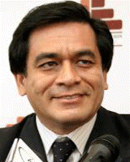

Organos de Dirección

Rector de la Universidad de San Martín de Porres
Central Telefónica: 362-0064/317-2130
anexos: 3103/3136
El Decano es el representante de la Facultad de Ingeniería y Arquitectura ante la Asamblea Universitaria, el Consejo Universitario y otras instituciones públicas y privadas, para lo cual se encuentra incluido de las prerrogativas inherentes a su cargo.
Ing. José Antonio Chang EscobedoRector de la Universidad de San Martín de Porres
Central Telefónica: 362-0064/317-2130
anexos: 3103/3136
El Decano es el representante de la Facultad de Ingeniería y Arquitectura ante la Asamblea Universitaria, el Consejo Universitario y otras instituciones públicas y privadas, para lo cual se encuentra incluido de las prerrogativas inherentes a su cargo.
Ing. Luis Celi SaavedraDecano
decanofia@usmp.pe
2086000 anexo 1101